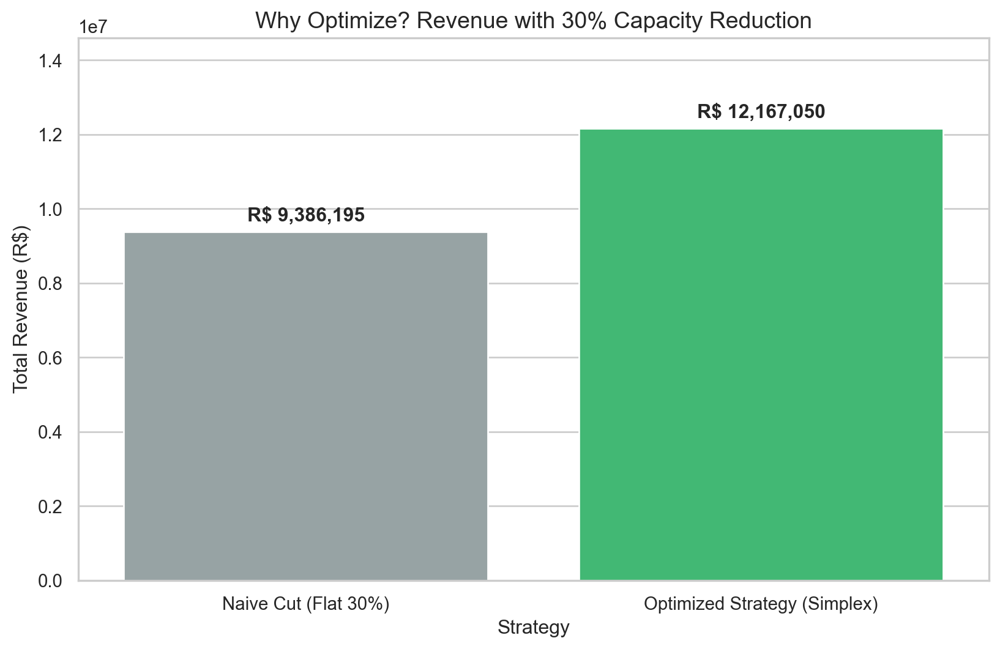

revenue_data = pd.DataFrame({'Strategy': ['Naive Cut (Flat 30%)', 'Optimized Strategy (Simplex)'],'Revenue': [naive_revenue, opt_revenue]})plt.figure(figsize=(10, 6))ax = sns.barplot(data=revenue_data, x='Strategy', y='Revenue', palette=['#95a5a6', '#2ecc71'])plt.title('Why Optimize? Revenue with 30% Capacity Reduction', fontsize=14)plt.ylabel('Total Revenue (R$)')# Add values on top of barsfor p in ax.patches: ax.annotate(f'R$ {p.get_height():,.0f}', (p.get_x() + p.get_width() /2., p.get_height()), ha='center', va='center', xytext=(0, 10), textcoords='offset points', fontweight='bold')plt.ylim(0, opt_revenue *1.2) # Give some space at the topplt.show()
C:\Users\Lenovo\AppData\Local\Temp\ipykernel_14216\3022815952.py:7: FutureWarning:
Passing `palette` without assigning `hue` is deprecated and will be removed in v0.14.0. Assign the `x` variable to `hue` and set `legend=False` for the same effect.
ax = sns.barplot(data=revenue_data, x='Strategy', y='Revenue', palette=['#95a5a6', '#2ecc71'])

Figure 1: Revenue Comparison: Optimized Prioritization vs. Naive Percentage Cut